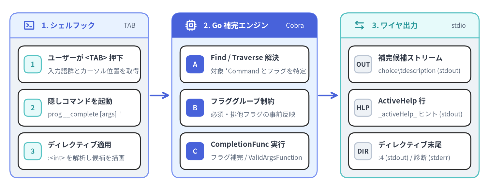
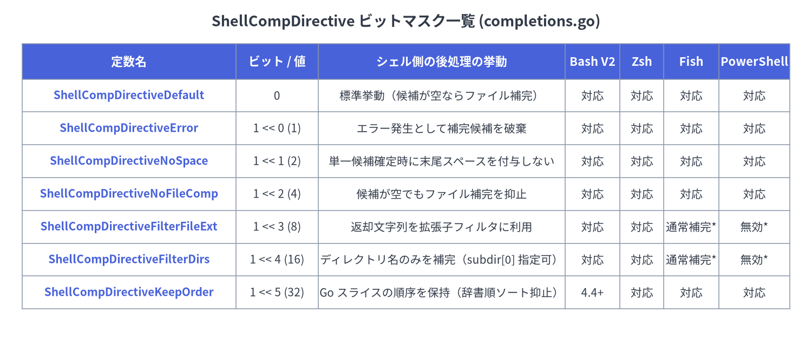

05. 動的シェル補完・ディレクティブ・ActiveHelp
github.com/spf13/cobra の動的補完エンジン（completions.go および active_help.go）は、CLI アプリケーションがコンテキストに応じたタブ補完候補とインラインの操作ヒント（ActiveHelp）をすべて Go コードだけで動的に計算できるようにする仕組みです。Shell Completion V2 では、静的なフラグ一覧やサブコマンド表をシェルスクリプト側にハードコードするのではなく、実行時に隠し内部コマンド（__complete および __completeNoDesc）へ補完評価を委譲し、ShellCompDirective ビットマスクを通じて補完後のシェルの振る舞いをきめ細かく制御します。

Source Code
from drawlib.canvas import save, setup
from drawlib.icons import phosphor
from drawlib.lines import line
from drawlib.smartarts import CardList, Panel
from drawlib.styles import Styles
setup(width=148, height=58, dpi=150)
# 1. Left Panel: Shell Hook
p1 = Panel(
"1. シェルフック",
"TAB",
style=Styles.Neutral,
header_style=Styles.PrimaryNeutral,
text_style=Styles.PrimaryBold.patch(text_size=11.0),
description_style=Styles.Muted.patch(text_size=9.5),
header_height=7.5,
icon=phosphor.terminal_window,
icon_style=Styles.PrimaryBold,
)
p1.draw(xy=(3, 4), width=42, height=50)
ix1, iw1, ih1 = p1.get_content_box(xy=(3, 4), width=42, height=50, padding=(2.5, 2.5))
cl1 = CardList(
style=Styles.White,
text_style=Styles.DarkBold.patch(text_size=10.5),
description_style=Styles.Muted.patch(text_size=9.5),
badge_shape="rounded_rect",
badge_style=Styles.SecondaryNeutral,
badge_text_style=Styles.SecondaryBold.patch(text_size=10.0),
spacing=2.0,
)
cl1.add("ユーザーが <TAB> 押下", "入力語群とカーソル位置を取得", badge_text="1")
cl1.add("隠しコマンドを起動", "prog __complete [args] ''", badge_text="2")
cl1.add("ディレクティブ適用", ":<int> を解析し候補を描画", badge_text="3")
cl1.draw(xy=ix1, width=iw1, height=ih1)
line((45.5, 29), (51.5, 29), arrow_head="->", style=Styles.PrimaryBold)
# 2. Middle Panel: Go Runtime Engine
p2 = Panel(
"2. Go 補完エンジン",
"Cobra",
style=Styles.PrimaryNeutral,
header_style=Styles.PrimaryFlat,
text_style=Styles.WhiteBold.patch(text_size=11.0),
description_style=Styles.White.patch(text_size=9.5),
header_height=7.5,
icon=phosphor.cpu,
icon_style=Styles.WhiteBold,
)
p2.draw(xy=(52, 4), width=44, height=50)
ix2, iw2, ih2 = p2.get_content_box(xy=(52, 4), width=44, height=50, padding=(2.5, 2.5))
cl2 = CardList(
style=Styles.White,
text_style=Styles.DarkBold.patch(text_size=10.5),
description_style=Styles.Muted.patch(text_size=9.5),
badge_shape="rounded_rect",
badge_style=Styles.PrimaryFlat,
badge_text_style=Styles.WhiteBold.patch(text_size=10.0),
spacing=2.0,
)
cl2.add("Find / Traverse 解決", "対象 *Command とフラグを特定", badge_text="A")
cl2.add("フラググループ制約", "必須・排他フラグの事前反映", badge_text="B")
cl2.add("CompletionFunc 実行", "フラグ補完 / ValidArgsFunction", badge_text="C")
cl2.draw(xy=ix2, width=iw2, height=ih2)
line((96.5, 29), (102.5, 29), arrow_head="->", style=Styles.PrimaryBold)
# 3. Right Panel: Wire Stream Output
p3 = Panel(
"3. ワイヤ出力",
"stdio",
style=Styles.Neutral,
header_style=Styles.SecondaryNeutral,
text_style=Styles.SecondaryBold.patch(text_size=11.0),
description_style=Styles.Muted.patch(text_size=9.5),
header_height=7.5,
icon=phosphor.arrows_left_right,
icon_style=Styles.SecondaryBold,
)
p3.draw(xy=(103, 4), width=42, height=50)
ix3, iw3, ih3 = p3.get_content_box(xy=(103, 4), width=42, height=50, padding=(2.5, 2.5))
cl3 = CardList(
style=Styles.White,
text_style=Styles.DarkBold.patch(text_size=10.5),
description_style=Styles.Muted.patch(text_size=9.5),
badge_shape="rounded_rect",
badge_style=Styles.Neutral,
badge_text_style=Styles.DarkBold.patch(text_size=9.5),
spacing=2.0,
)
cl3.add("補完候補ストリーム", "choice\\tdescription (stdout)", badge_text="OUT")
cl3.add("ActiveHelp 行", "_activeHelp_ ヒント (stdout)", badge_text="HLP")
cl3.add("ディレクティブ末尾", ":4 (stdout) / 診断 (stderr)", badge_text="DIR")
cl3.draw(xy=ix3, width=iw3, height=ih3)
save()
typeCompletion & CompletionFunc#
completions.go で定義されている Completion と CompletionFunc は、Cobra v1.10.2 における静的補完（Command.ValidArgs）および動的補完（Command.ValidArgsFunction、Command.RegisterFlagCompletionFunc）の基盤となる型エイリアスです。
Go シグネチャ#
// Completion is a string that can be used for completions.
// Two formats are supported:
// - the completion choice
// - the completion choice with a textual description (separated by a TAB).
// Note: Go type alias is used to provide a more descriptive name in the documentation,
// but any string can be used.
type Completion = string
// CompletionFunc is a function that provides completion results.
type CompletionFunc = func(cmd *Command, args []string, toComplete string) ([]Completion, ShellCompDirective)
パラメータと戻り値の仕様#
| パラメータ / 戻り値 | 型 | 説明 |
|---|---|---|
cmd |
*Command |
補完リクエストの対象として解決されたコマンド。パース済みのフラグ状態や cmd.Context() を保持します。 |
args |
[]string |
コマンドライン上で既に入力完了している位置引数のスライス（DisableFlagParsing が false の場合はフラグ類を除き、入力途中の toComplete も除いたもの）。 |
toComplete |
string |
カーソル位置で現在入力途中のプレフィックス文字列（末尾がスペースの直後の場合は ""）。 |
[]Completion |
[]string |
補完候補文字列（"値" または "値\t説明"）のスライス。必要に応じて _activeHelp_ プレフィックス付きの行を含めることができます。 |
ShellCompDirective |
int（ビットマスク） |
呼び出し元のシェルスクリプトに後処理の挙動を指示するビットマスク（例：ShellCompDirectiveNoFileComp）。 |
[!NOTE]
type Completion = stringおよびtype CompletionFunc = func(...)は Go の型エイリアス（=） として宣言されているため、従来の[]stringやfunc(cmd *cobra.Command, args []string, toComplete string) ([]string, cobra.ShellCompDirective)を直接渡す既存コードとも型変換なしで 100% 互換性を保ちます。
funcCompletionWithDesc, NoFileCompletions & FixedCompletions#
Cobra は completions.go において、説明付き補完候補の組み立てや定型的な CompletionFunc コールバックを簡潔に記述するための 3 つのヘルパー関数を提供しています。
Go シグネチャ#
// CompletionWithDesc returns a Completion with a description by using the TAB delimited format.
func CompletionWithDesc(choice string, description string) Completion
// NoFileCompletions can be used to disable file completion for commands that should
// not trigger file completions. This method satisfies CompletionFunc.
func NoFileCompletions(cmd *Command, args []string, toComplete string) ([]Completion, ShellCompDirective)
// FixedCompletions can be used to create a completion function which always
// returns the same results. This method returns a function that satisfies CompletionFunc.
func FixedCompletions(choices []Completion, directive ShellCompDirective) CompletionFunc
ヘルパー関数一覧と役割#
| 関数名 | シグネチャ / 役割 | 戻り値 | 主なユースケース |
|---|---|---|---|
CompletionWithDesc |
(choice, description string) Completion |
choice + "\t" + description |
ValidArgs、FixedCompletions、または独自の CompletionFunc 内で説明付き候補を生成します。複数行の説明文は出力時に最初の \n で切り詰められます。 |
NoFileCompletions |
CompletionFunc |
nil, ShellCompDirectiveNoFileComp |
ファイル引数を一切受け取らないコマンド（completion や version など）で cmd.ValidArgsFunction = cobra.NoFileCompletions として直接代入します。 |
FixedCompletions |
(choices []Completion, directive ShellCompDirective) CompletionFunc |
(choices, directive) を返すクロージャ |
フラグの固定選択肢（cmd.RegisterFlagCompletionFunc("output", cobra.FixedCompletions(...))）や固定の位置引数候補を登録します。 |
使用例#
package main
import (
"strings"
"github.com/spf13/cobra"
)
func newDeployCmd() *cobra.Command {
var env string
cmd := &cobra.Command{
Use: "deploy [service]",
Short: "指定したサービスをターゲット環境へデプロイします",
ValidArgsFunction: func(cmd *cobra.Command, args []string, toComplete string) ([]cobra.Completion, cobra.ShellCompDirective) {
if len(args) > 0 {
return cobra.NoFileCompletions(cmd, args, toComplete)
}
candidates := []cobra.Completion{
cobra.CompletionWithDesc("api-gateway", "公開 HTTP/gRPC イングレスプロキシ"),
cobra.CompletionWithDesc("auth-worker", "OAuth2 & OIDC トークン発行ワーカー"),
cobra.CompletionWithDesc("billing-svc", "決済・台帳照合マイクロサービス"),
}
var filtered []cobra.Completion
for _, c := range candidates {
if strings.HasPrefix(c, toComplete) {
filtered = append(filtered, c)
}
}
return filtered, cobra.ShellCompDirectiveNoFileComp
},
RunE: func(cmd *cobra.Command, args []string) error {
return nil
},
}
cmd.Flags().StringVarP(&env, "env", "e", "staging", "デプロイ先の環境名")
_ = cmd.RegisterFlagCompletionFunc("env", cobra.FixedCompletions([]cobra.Completion{
cobra.CompletionWithDesc("dev", "開発用エフェメラルクラスタ"),
cobra.CompletionWithDesc("staging", "ステージング検証クラスタ"),
cobra.CompletionWithDesc("prod", "本番マルチリージョンクラスタ"),
}, cobra.ShellCompDirectiveNoFileComp|cobra.ShellCompDirectiveKeepOrder))
return cmd
}
typeShellCompDirective & ビットマスク定数#
ShellCompDirective（completions.go）は、__complete の標準出力の最終行（:<directive>\n）に出力される整数ビットマスクであり、返却された補完候補をシェル側でどのように後処理するかを指示します。

Source Code
from drawlib.canvas import save, setup
from drawlib.smartarts import Table
from drawlib.styles import Colors, Styles
from drawlib.text import text
setup(width=148, height=62, dpi=150)
text(
(74, 58),
"ShellCompDirective ビットマスク一覧 (completions.go)",
style=Styles.DarkBold.patch(text_size=13.0),
)
tbl = Table(
cell_style=Styles.White,
text_style=Styles.Dark.patch(text_size=10.0),
header_cell_style=Styles.PrimaryFlat,
header_text_style=Styles.WhiteBold.patch(text_size=10.5),
border_style=Styles.MutedThin,
)
rows = [
["定数名", "ビット / 値", "シェル側の後処理の挙動", "Bash V2", "Zsh", "Fish", "PowerShell"],
["ShellCompDirectiveDefault", "0", "標準挙動（候補が空ならファイル補完）", "対応", "対応", "対応", "対応"],
["ShellCompDirectiveError", "1 << 0 (1)", "エラー発生として補完候補を破棄", "対応", "対応", "対応", "対応"],
["ShellCompDirectiveNoSpace", "1 << 1 (2)", "単一候補確定時に末尾スペースを付与しない", "対応", "対応", "対応", "対応"],
["ShellCompDirectiveNoFileComp", "1 << 2 (4)", "候補が空でもファイル補完を抑止", "対応", "対応", "対応", "対応"],
["ShellCompDirectiveFilterFileExt", "1 << 3 (8)", "返却文字列を拡張子フィルタに利用", "対応", "対応", "通常補完*", "無効*"],
["ShellCompDirectiveFilterDirs", "1 << 4 (16)", "ディレクトリ名のみを補完（subdir[0] 指定可）", "対応", "対応", "通常補完*", "無効*"],
["ShellCompDirectiveKeepOrder", "1 << 5 (32)", "Go スライスの順序を保持（辞書順ソート抑止）", "4.4+", "対応", "対応", "対応"],
]
tbl.set_style_cell_evenodd(
even_color=Colors.Light,
even_text_style=Styles.Dark.patch(text_size=10.0),
odd_color=Colors.White,
odd_text_style=Styles.Dark.patch(text_size=10.0),
)
tbl.set_style_cell_header(
background_color=Colors.Primary,
text_style=Styles.WhiteBold.patch(text_size=10.5),
)
tbl.set_style_cell(
background_color=Colors.Light,
text_style=Styles.PrimaryBold.patch(text_size=10.0),
rows=[1, 2, 3, 4, 5, 6, 7],
columns=[0],
)
tbl.draw_flexible(
xy=(4, 54),
column_widths=[39, 15, 45, 10, 8, 10, 13],
row_heights=[6.5, 6.0, 6.0, 6.0, 6.0, 6.0, 6.0, 6.0],
data=rows,
align="top_left",
)
save()
Go 定義#
// ShellCompDirective is a bit map representing the different behaviors the shell
// can be instructed to have once completions have been provided.
type ShellCompDirective int
const (
// ShellCompDirectiveError indicates an error occurred and completions should be ignored.
ShellCompDirectiveError ShellCompDirective = 1 << iota // 1
// ShellCompDirectiveNoSpace indicates that the shell should not add a space
// after the completion even if there is a single completion provided.
ShellCompDirectiveNoSpace // 2
// ShellCompDirectiveNoFileComp indicates that the shell should not provide
// file completion even when no completion is provided.
ShellCompDirectiveNoFileComp // 4
// ShellCompDirectiveFilterFileExt indicates that the provided completions
// should be used as file extension filters.
ShellCompDirectiveFilterFileExt // 8
// ShellCompDirectiveFilterDirs indicates that only directory names should
// be provided in file completion.
ShellCompDirectiveFilterDirs // 16
// ShellCompDirectiveKeepOrder indicates that the shell should preserve the order
// in which the completions are provided.
ShellCompDirectiveKeepOrder // 32
// ShellCompDirectiveDefault indicates to let the shell perform its default
// behavior after completions have been provided.
ShellCompDirectiveDefault ShellCompDirective = 0
)
各ディレクティブの詳細セマンティクス#
ShellCompDirectiveDefault(0): シェルに標準の補完後処理を行わせます。候補が 0 件だった場合、シェルはローカルファイル名の補完にフォールバックします。コマンド階層ごとの既定値はCommand.CompletionOptions.DefaultShellCompDirectiveで変更可能です。ShellCompDirectiveError(1): 補完計算中にエラーが発生したことを示し、返却されたすべての候補を無視して補完を中断します。ShellCompDirectiveNoSpace(2): 候補が 1 件に絞られて自動挿入された際、末尾に空白スペースを自動追加しないようシェルに指示します（namespace/やkey=など、続けて文字を入力させるプレフィックス補完で有用です）。ShellCompDirectiveNoFileComp(4): 一致する候補が 0 件であっても、ローカルファイルシステム上のファイル・ディレクトリ補完へのフォールバックを禁止します。ShellCompDirectiveFilterFileExt(8): 返却された[]Completionの各要素をファイル拡張子フィルタ（先頭のドットなし、例：[]string{"yaml", "yml", "json"}）として扱います。Bash（_filedir）および Zsh（_files -g）でネイティブ動作し、Fish では通常のファイル補完へフォールバック、PowerShell では拡張子文字列自体の誤補完を防ぐため何も返さず終了します。ShellCompDirectiveFilterDirs(16): ディレクトリ名のみを補完対象に制限します（Bash の_filedir -d、Zsh の_files -/）。[]Completion{"subdir"}のように要素を 1 つ返した場合、そのsubdir配下のサブディレクトリ一覧を補完します。ShellCompDirectiveKeepOrder(32): シェルによるアルファベット順ソートを抑止し、Go のスライス順をそのまま維持します（Bash 4.4 以降のcompopt -o nosort、Zsh の_describe -V、Fish のcomplete -k、PowerShell のSort-Objectスキップに対応）。
structCompletionOptions#
Command.CompletionOptions フィールドに埋め込まれる CompletionOptions（completions.go）は、デフォルトの completion サブコマンド生成や補完説明文の有無、デフォルトディレクティブを制御します。
Go 定義#
// CompletionOptions are the options to control shell completion
type CompletionOptions struct {
// DisableDefaultCmd prevents Cobra from creating a default 'completion' command
DisableDefaultCmd bool
// DisableNoDescFlag prevents Cobra from creating the '--no-descriptions' flag
// for shells that support completion descriptions
DisableNoDescFlag bool
// DisableDescriptions turns off all completion descriptions for shells
// that support them
DisableDescriptions bool
// HiddenDefaultCmd makes the default 'completion' command hidden
HiddenDefaultCmd bool
// DefaultShellCompDirective sets the ShellCompDirective that is returned
// if no special directive can be determined
DefaultShellCompDirective *ShellCompDirective
}
func (receiver *CompletionOptions) SetDefaultShellCompDirective(directive ShellCompDirective)
フィールドおよびメソッド仕様#
| フィールド / メソッド | 型 | 説明 |
|---|---|---|
DisableDefaultCmd |
bool |
ルートコマンドで true に設定すると、InitDefaultCompletionCmd は何も行わず、組み込みの completion サブコマンドを追加しません。 |
DisableNoDescFlag |
bool |
completion bash|zsh|fish|powershell サブコマンドに --no-descriptions フラグを自動追加しないようにします。 |
DisableDescriptions |
bool |
生成されるスクリプトで補完説明文を既定で無効化し（__completeNoDesc を呼び出すようになり）、--no-descriptions フラグも省略します。実行時に環境変数 <PROGRAM>_COMPLETION_DESCRIPTIONS=false または COBRA_COMPLETION_DESCRIPTIONS=false でも切り替え可能です。 |
HiddenDefaultCmd |
bool |
自動生成される completion サブコマンドに Hidden: true を設定し、ヘルプ一覧から隠しつつ実行可能な状態にします。 |
DefaultShellCompDirective |
*ShellCompDirective |
特別なディレクティブが決定されなかった場合に ShellCompDirectiveDefault (0) の代わりに使用するフォールバックディレクティブへのポインタ。 |
SetDefaultShellCompDirective(directive) |
method |
ShellCompDirective 値を受け取り、そのポインタ &directive を DefaultShellCompDirective に設定するヘルパーメソッドです。補完実行時、Cobra は対象コマンドから親コマンドへ遡り、最初に見つかった非 nil の DefaultShellCompDirective を適用します。 |
methodCommand.RegisterFlagCompletionFunc & GetFlagCompletionFunc#
フラグ値の動的補完関数は、パッケージ内部の sync.RWMutex（flagCompletionMutex）で保護されたグローバルマップ map[*pflag.Flag]CompletionFunc に保持されます。
Go シグネチャ#
// RegisterFlagCompletionFunc should be called to register a function to provide completion for a flag.
// You can use pre-defined completion functions such as FixedCompletions or NoFileCompletions,
// or you can define your own.
func (c *Command) RegisterFlagCompletionFunc(flagName string, f CompletionFunc) error
// GetFlagCompletionFunc returns the completion function for the given flag of the command, if available.
func (c *Command) GetFlagCompletionFunc(flagName string) (CompletionFunc, bool)
// SliceValue is a reduced version of pflag.SliceValue. It is used to detect
// flags that accept multiple values and therefore can provide completion multiple times.
type SliceValue interface {
GetSlice() []string
}
動作上の重要ポイント#
- フラグ探索スコープ:
RegisterFlagCompletionFuncとGetFlagCompletionFuncはどちらもc.Flag(flagName)を呼び出して対象フラグを検索するため、ローカルフラグだけでなく親コマンドから継承された永続フラグ（PersistentFlags）に対しても登録・取得が可能です。 - エラー条件:
RegisterFlagCompletionFuncは以下の場合にエラーを返します。- 指定した
flagNameが対象コマンドおよび親階層に存在しない場合（RegisterFlagCompletionFunc: flag '<name>' does not exist）。 - 同一の
*pflag.Flagに対して既に補完関数が登録されている場合（RegisterFlagCompletionFunc: flag '<name>' already registered）。
- 指定した
- 複数回指定可能なフラグ（
SliceValue）: フラグ名補完（--<TAB>）の際、Cobra は通常、既にコマンドラインで指定済みのフラグ（flag.Changed == true）を候補から除外します。ただし、flag.Valueがcobra.SliceValueを実装している場合、またはflag.Value.Type()に"Slice"、"Array"が含まれるか"stringTo"で始まる場合は、複数回指定可能なフラグとみなして何度でも補完候補に提示します。 - フラググループと必須フラグの連携: フラグ名補完を行う直前に
enforceFlagGroupsForCompletion()（flag_groups.go）が呼び出され、相互排他グループ（MarkFlagsMutuallyExclusive）の競合フラグを隠したり、同時必須グループ（MarkFlagsRequiredTogether）の片方が指定された際に残りのフラグを必須化したりする処理が自動で行われます。
constShellCompRequestCmd & ShellCompNoDescRequestCmd#
これら 2 つのエクスポート定数（completions.go）は、ユーザーが <TAB> キーを押した際に各シェルの補完スクリプトから呼び出される隠しサブコマンド名を定義します。
Go 定義#
const (
// ShellCompRequestCmd is the name of the hidden command that is used to request
// completion results from the program. It is used by the shell completion scripts.
ShellCompRequestCmd = "__complete"
// ShellCompNoDescRequestCmd is the name of the hidden command that is used to request
// completion results without their description. It is used by the shell completion scripts.
ShellCompNoDescRequestCmd = "__completeNoDesc"
)
ワイヤプロトコルの実行ライフサイクル（initCompleteCmd）#
ExecuteC()の冒頭でc.initCompleteCmd(args)が呼ばれ、隠しコマンド__complete（エイリアス__completeNoDesc、DisableFlagParsing: true、Args: MinimumNArgs(1)）が一時的にルートへ追加されます。c.Find(args)の結果、呼び出し先が__complete（または__completeNoDesc）でなければ、即座にc.RemoveCommand(completeCmd)で削除されるため、サブコマンドを持たない単一コマンド CLI の挙動に副作用を与えません。<prog> __complete <args...> <toComplete>として実行された場合：- 各補完候補が整形され（
__completeNoDescまたはCOBRA_COMPLETION_DESCRIPTIONS=falseの場合は\t以降の説明文を除去、最初の\n以降を切り詰め、strings.TrimSpaceを適用）、finalCmd.OutOrStdout()に 1 行ずつ出力されます。 stdoutの最終行に:<directive>\n（例：:4）が出力されます。finalCmd.ErrOrStderr()には開発者向けの診断メッセージCompletion ended with directive: <names>\nが出力されます（シェルスクリプト実行時は/dev/nullに破棄されますが、ターミナルから手動で<prog> __complete ...を叩いた際に確認できます）。
- 各補完候補が整形され（
funcCompDebug, CompDebugln, CompError & CompErrorln#
シェル補完スクリプトはプログラムの標準出力（stdout）をそのまま補完候補リストとしてパースするため、ValidArgsFunction や RegisterFlagCompletionFunc の中で fmt.Println 等を使って stdout にデバッグ出力を行うと補完が壊れます。Cobra は completions.go において、トレースログを安全に BASH_COMP_DEBUG_FILE や os.Stderr へ出力する 4 つの診断用関数を提供しています。
Go シグネチャ#
// CompDebug prints the specified string to the same file as where the
// completion script prints its logs.
// Note that completion printouts should never be on stdout as they would
// be wrongly interpreted as actual completion choices by the completion script.
func CompDebug(msg string, printToStdErr bool)
// CompDebugln prints the specified string with a newline at the end
// to the same file as where the completion script prints its logs.
func CompDebugln(msg string, printToStdErr bool)
// CompError prints the specified completion message to stderr.
func CompError(msg string)
// CompErrorln prints the specified completion message to stderr with a newline at the end.
func CompErrorln(msg string)
診断ログ出力先マトリクス#
| 関数名 | 付与されるプレフィックス | BASH_COMP_DEBUG_FILE への追記 |
os.Stderr への出力 |
末尾 \n 付与 |
|---|---|---|---|---|
CompDebug(msg, printToStdErr) |
"[Debug] " |
あり（O_APPEND|O_CREATE|O_WRONLY, 0644） |
printToStdErr == true の場合のみ |
なし |
CompDebugln(msg, printToStdErr) |
"[Debug] " |
あり | printToStdErr == true の場合のみ |
あり |
CompError(msg) |
"[Debug] [Error] " |
あり | 常にあり（true） |
なし |
CompErrorln(msg) |
"[Debug] [Error] " |
あり | 常にあり（true） |
あり |
デバッグ手順の例#
# 別ターミナルでログファイルを tail しながら、メインのシェルで <TAB> を押してトレースを確認：
export BASH_COMP_DEBUG_FILE=/tmp/cobra_comp.log
tail -f /tmp/cobra_comp.log
funcAppendActiveHelp & GetActiveHelpConfig#
active_help.go で定義されている ActiveHelp は、ユーザーがコマンドラインを入力している最中にインラインで操作ヒント・注意事項・引数ガイドを表示する機能です（Bash V2 および Zsh でサポートされ、Fish と PowerShell の生成スクリプトでは自動的に無効化されます）。
Go シグネチャ#
// AppendActiveHelp adds the specified string to the specified array to be used as ActiveHelp.
// Such strings will be processed by the completion script and will be shown as ActiveHelp
// to the user.
func AppendActiveHelp(compArray []Completion, activeHelpStr string) []Completion
// GetActiveHelpConfig returns the value of the ActiveHelp environment variable
// <PROGRAM>_ACTIVE_HELP where <PROGRAM> is the name of the root command in upper
// case, with all non-ASCII-alphanumeric characters replaced by `_`.
// It will always return "0" if the global environment variable COBRA_ACTIVE_HELP
// is set to "0".
func GetActiveHelpConfig(cmd *Command) string
ActiveHelp のワイヤ表現と環境変数による制御#
- ワイヤマーカー（
_activeHelp_）:AppendActiveHelp(comps, text)は[]Completionスライスに"_activeHelp_ " + textを追加して返します。複数回呼び出すことで複数行のヒントを順番に表示できます。 - 環境変数の優先順位（
GetActiveHelpConfig）:- まずグローバル環境変数
COBRA_ACTIVE_HELPを確認します。値が"0"の場合、ActiveHelp は全体で無効化されます（GetActiveHelpConfigは常に"0"を返し、__completeも出力時にすべての_activeHelp_行を除外します）。 "0"でない場合は、プログラム固有の環境変数<PROGRAM>_ACTIVE_HELPの値を返します。ここで<PROGRAM>はcmd.Root().Name()を大文字化し、ASCII 英数字と_以外の文字（ハイフンなど）をすべて_に置換した名前です（例：my-cli→MY_CLI_ACTIVE_HELP）。- アプリケーション開発者は
ValidArgsFunction内でcobra.GetActiveHelpConfig(cmd)の返却値を調べることで、独自のヒント詳細度（"short"、"full"、"0"など）を実装できます。
- まずグローバル環境変数
使用例#
cmd.ValidArgsFunction = func(cmd *cobra.Command, args []string, toComplete string) ([]cobra.Completion, cobra.ShellCompDirective) {
var comps []cobra.Completion
cfg := cobra.GetActiveHelpConfig(cmd)
if len(args) == 0 {
if cfg != "0" {
comps = cobra.AppendActiveHelp(comps, "デプロイ対象のクラスタリージョンを指定してください (例: us-central1, asia-northeast1)")
}
comps = append(comps,
cobra.CompletionWithDesc("us-central1", "アイオワ（北米リージョン）"),
cobra.CompletionWithDesc("europe-west1", "ベルギー（欧州リージョン）"),
cobra.CompletionWithDesc("asia-northeast1", "東京（アジア北東リージョン）"),
)
return comps, cobra.ShellCompDirectiveNoFileComp
}
return cobra.NoFileCompletions(cmd, args, toComplete)
}
関連リファレンス#
- 03. フラグ・FlagSet・フラググループ制約 —
MarkFlagRequired、MarkFlagFilename、MarkFlagDirname、MarkFlagCustom、およびフラググループ制約の補完連動。 - 04. PositionalArgs と位置引数バリデータ — 静的な
ValidArgs、ArgAliases、およびPositionalArgs検証関数。 - 06. シェル補完スクリプト生成関数 —
InitDefaultCompletionCmd、Bash V2/V1、Zsh、Fish、PowerShell 向けスクリプト生成 API。